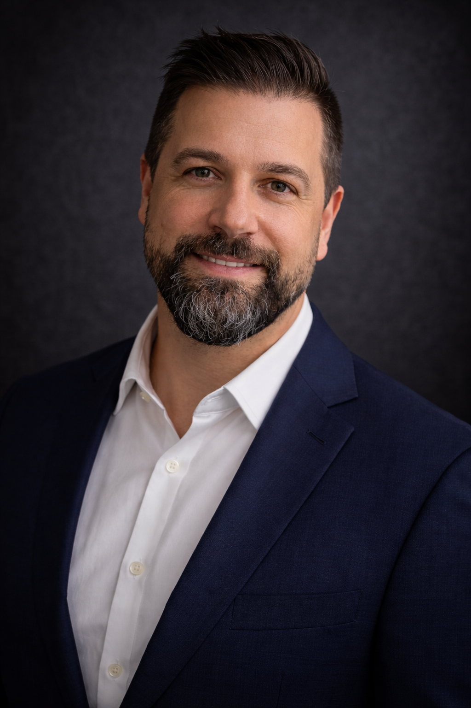
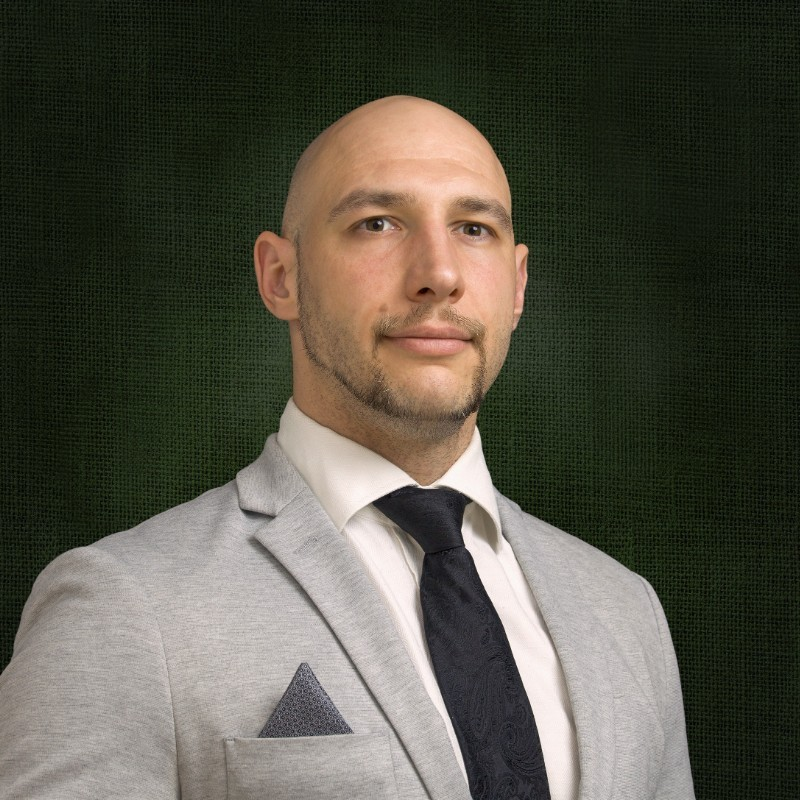
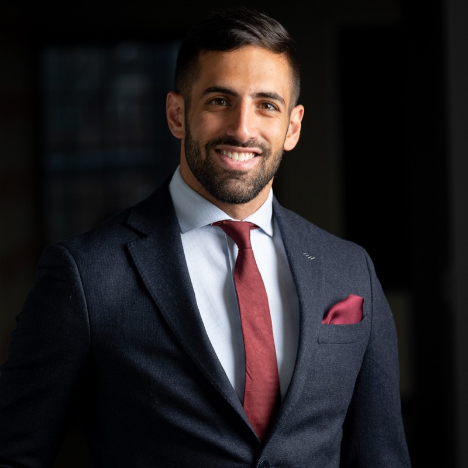
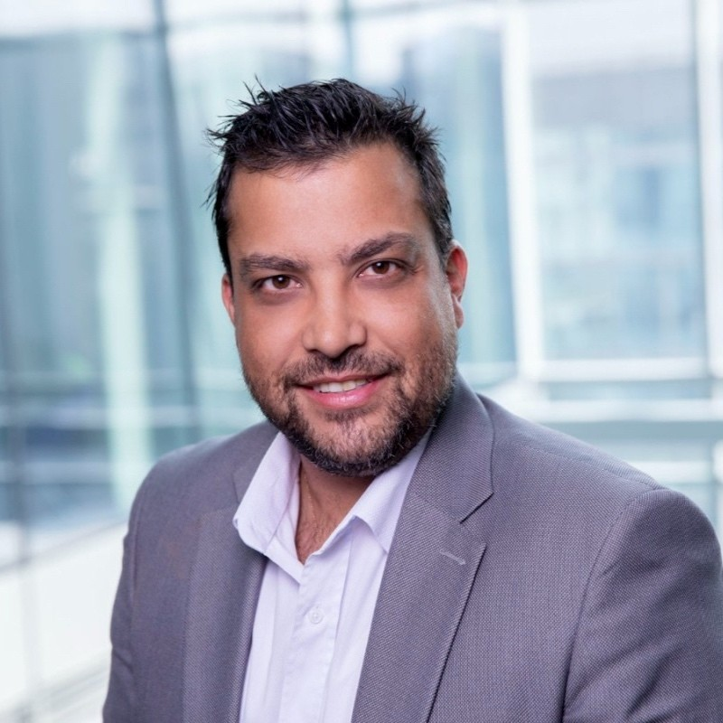
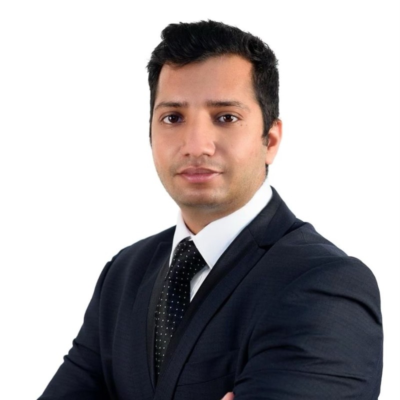

A team that has already delivered
at this level.
A pipeline that is already named.
This is not a team being built from scratch. Every hire from Manager upward has sat in front of a sovereign client, made decisions under pressure, and delivered the outcome. The advisor-doer distinction does not exist in this team.





Six specialist profiles activated on engagement demand — not permanent headcount. Sourced from EY's existing technology consulting pool or from Ivan's specialist network depending on the engagement context and platform requirements.
Oracle PMIS specialist · Reporting & dashboards analyst · BIM / CDE analyst · Data & integration analyst · Digital Twin / IoT analyst · Schedule analyst (P6)
Billed at junior rates. Managed by the engagement Manager. EY's advisory independence is never compromised — the bench works on the client's environment under EY's governance framework, regardless of source.
Every person from Manager upward is client-facing, delivery-proven, and capable of leading a workstream independently. Ivan operates as originator and strategic authority — not as the team's delivery backstop. That is the only model that generates $2M in Year 1.
Ten client organisations across KSA, UAE, and Qatar. Fourteen named contacts at Director level and above. Three phases of activation — each unlocking the next. The 90-day sprint gets the first engagement signed. The 18-month build creates a practice Carlos can defend to the EY partnership.
Governance recalibration as programme shifts from mobilisation to active delivery. Digital Twin operational layer — natural Phase 2 of work already delivered. Yardi adoption (September 2025) creates a new three-way integration mandate unaddressed by any current advisor. Ivan is the incumbent. Zero trust cycle required.
Owner-side programme controls assessment — independent of EPC contractors. Oracle Analytics Cloud deployed for finance reporting; owner-side capital project PMIS is the open gap. NIC reporting requires reliable delivery data that the current EPC-managed structure cannot guarantee. Entry engagement that pulls through a larger governance mandate.
PMWeb deployed across a $120B+ national housing portfolio. Governance maturity question at this scale — whether the EPMO data architecture produces trustworthy portfolio-level intelligence — is the exact conversation Ivan has led at Qiddiya. Same problem. Larger scale. Mahmoud leads KSA activation from Month 6.
Parsons holds the 25-month PMO contract. KSPF leadership needs an independent view above Parsons' delivery layer. Digital Twin actively in development — CEO confirmed. 2027 opening deadline. Activates Month 9 with warm senior relationships from a delivered Smart City Strategy engagement across technology and operations leadership.
Mace Consult holds the sitewide PMC mandate ($63B programme, UNESCO heritage site). EY's advisory entry is at the owner-side governance layer above Mace — PMIS strategy, heritage asset information management, Digital Twin for a living heritage environment. No cold approach. Christopher Seymour (MD MEA, Mace Consult) is the direct relationship.
Three PMC firms — Bechtel, Turner Arabia, AECOM — three separate reporting chains, no single owner-side PMIS layer. Smart city strategy mandate above platform vendors. $38B programme with FIFA 2034 stadium interface and 2030 target. Senior escalation via Mohammed Alqahtani (Head Smart City & AI, MIT-educated).
30+ facilities, $26.2B financing secured, Stargate UAE partner. Turner & Townsend holds the PMC role. NexOps operational platform (Presight AI) launched February 2026 — governance framework open. Construction-to-operations handover intelligence is the immediate mandate advisory gap.
Largest capital spender in KSA — $40B+ annual capex. Worley holds the GES+ 5-year engineering contract. EY advises the owner at the governance layer above Worley's engineering scope. SAP ↔ Oracle PMIS reconciliation is a confirmed structural problem across Aramco's capital portfolio — Ivan has solved this at Qiddiya. Highest single-engagement fee potential in the entire GCC market.
Worley holds active FEED mandates at ADNOC (Bab Gas Cap, Ruwais LNG) and QatarEnergy (CO₂ sequestration, North Field LNG — 10+ year relationship). EY advises the owner on capital programme governance and Digital Twin readiness above Worley's engineering scope. Worley's decade-long relationships are the trust bridge.
PIF-owned luxury tourism giga-programme — 100+ operators, 10+ integrated city management functions, geographic footprint comparable to Belgium. IOC Operating Model already delivered by Attila (Director, joining Month 9). His operational leadership relationships convert to a capital advisory and governance retainer as the programme transitions from construction to operations.
Christopher Seymour — MD MEA · Antony Brania — Director
Active mandates: Diriyah · Qiddiya · King Salman Airport
Independent since March 2026 (Goldman Sachs PE).
Actively seeking digital advisory partnerships.
Alex Silvermaster — Plan Practice Lead EMEA
Active mandates: Saudi Aramco (GES+) · ADNOC · NEOM · QatarEnergy · SABIC
Engineering and EPCM — no owner-side capital
advisory capability. EY fills that gap.
Five accounts activate in the first 90 days. Five more open in Months 7–18 — each unlocked by a team member joining, a partnership formalising, or a retainer converting. The practice doubles in pipeline depth every six months. That is the architecture of a practice — not the velocity of a sprint.